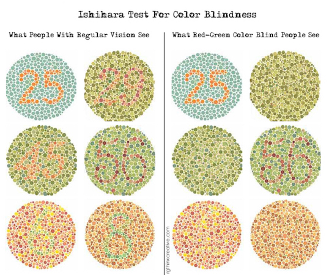

Today 8% of males and 0.5% of females have the more common red-green color blindness. I am conforming all theme packages to include a toggle option for people with color blindness. These settings will be stored in their session id. Consider this image of the red-green color blindness that 8.5% of people have.
A personal rant about outdated browser support actually costing companies more than they think. Insert statistics about how much avg. time and # of developers it take to have less features in theri website when they should focus on helping users update to better.